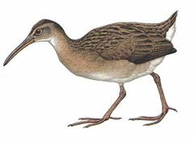
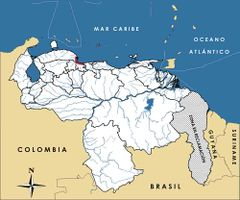

Rallus wetmorei
| Polla de Wetmore | |
|---|---|
|  | |
| Riesgo de extinción | |
 En peligro (UICN) | |
| Clasificación científica | |
| Reino: | Animalia |
| Filo: | Chordata |
| Clase: | Aves |
| Orden: | Gruiformes |
| Familia: | Rallidae |
| Género: | Rallus |
| Especie: | Rallus wetmorei |
| Nombre binomial | |
|
Rallus wetmorei Zimmer et Phelps, 1944 | |
| Distribución | |
|
 Mapa de distribución de Rallus wetmorei | |
Contenido
Información de Evaluación
- Categoría y Criterio Regional: En Peligro B1ab(iii,iv,v); D
- Fecha de Evaluación Regional: 2015
- Evaluadores: Jesús Morales-Campos y Ariany García-Rawlins
- Categoría y Criterio Global: En Peligro B1ab(i,ii,iii,iv,v)+2ab(i,ii,iii,iv,v); D
Justificación
Evaluaciones Previas
1999: En Peligro (EN)
2008: En Peligro (EN)
Información General
Nombres comunes
Polla de Wetmore, polla costeña, polla de mangle negro, rascón de Wetmore, Plain-flanked Rail.
Notas taxonómicas
Sinónimos
Descripción
Rálido de tamaño mediano que mide hasta 33 cm de longitud. Es una especie de coloración discreta, que se identifica fácilmente por su barbilla blanca, el dorso pardo oliva claro y la parte ventral pardo rosácea, siendo más blanca hacia la cola. Sus laterales son de color gris pero no posee barras oscuras. Su pico es más bien largo y en ligera curva (Phelps Jr. y Meyer de Schauensee 1979, Hilty 2003, Taylor, B. et al. 2014).
Distribución
Especie endémica de Venezuela, conocida únicamente en algunas lagunas salobres (siete localidades) a lo largo de una pequeña extensión de la costa de los estados Falcón, Carabobo y Aragua. En Falcón se conoce en Tucacas, cerca de Chichiriviche, y en el refugio de fauna silvestre de Cuare. En Carabobo se han colectado seis individuos provenientes de Puerto Cabello, Borburata y Patanemo (La Bocaina). En el estado Aragua solo se consigue en la localidad tipo, La Ciénaga, mientras que un registro en cercanías de Playa de Cata es con seguridad erróneo (e.g. A. Rodríguez-Ferraro com. pers., C. J. Sharpe obs. pers.). En la actualidad se reporta en apenas cinco localidades (Adriana Rodríguez-Ferraro com. pers.). Se estima que su distribución actual podría ser bastante menor que la original. Habita en manglares, en especial donde hay pequeñas áreas abiertas y pantanosas (Hilty 2003, Taylor, B. et al. 2014).
- Sistema: Terrestre, Marino
- Bioregión:
- Intervalo altitudinal (m): Temporalmente sin información
- Endémica: Sí
Situación
En Venezuela se le considera una de las cuatro aves con mayor prioridad para la conservación (Rodríguez, J. P. et al. 2004b), estando presente en una extensión de 3095,21 km2. Con base en las colecciones originales, se especula que pudo haber sido localmente abundante (Rodríguez, J. P. y Rojas-Suárez 2003). Se presume que sus poblaciones se encuentran decreciendo. No ha sido avistada después de constantes estudios ornitológicos, y se considera que podría estar extinta en los alrededores de Puerto Cabello (Collar et al. 1992). Aunque tiene poblaciones pequeñas (más de 20 parejas en Morrocoy y superior a 15 parejas en Patanemo) aún es más o menos fácil de observar en algunas localidades. No obstante su clasificación en una categoría alta de amenaza, y a pesar de enfrentar una situación grave que amerita acciones urgentes, su estado actual de conservación es poco conocido (Collar et al. 1992, BirdLife International 2000). Es probable que esté bastante amenazada, pero la falta de estudios y la carencia de información impiden tener una visión clara al respecto. A escala global Rallus wetmorei está clasificada En Peligro (BirdLife International 2015).
- EOO (km2): 1700
- AOO (km2): Temporalmente sin información
- Tendencia Poblacional: Decreciendo
Amenazas
Se ha planteado que las causas de la declinación de R. wetmorei están relacionadas con actividades humanas, principalmente con los desarrollos turísticos en la costa de Venezuela, la destrucción de los manglares y la expansión de industrias, incluyendo petroquímicas (Rodríguez, J. P. y Rojas-Suárez 2003). La construcción de la refinería de El Palito y la edificación del puerto en Puerto Cabello, redujo y fragmentó sus poblaciones. En el caso del refugio de fauna silvestre de Cuare, la disminución se atribuye tanto a las causas señaladas, como a la expansión de poblados, construcción de carreteras y contaminación por pesticidas y mercurio (Collar et al. 1992). Varias de las localidades donde se reporta son parte de los principales focos turísticos de las mayores zonas urbanas del país.
Conservación
En Venezuela R. wetmorei no cuenta con medidas de preservación específicas. Aunque está presente en el refugio de fauna silvestre de Cuare, uno de los cinco sitios Ramsar de Venezuela, debido a las presiones que esta área protegida enfrenta, no se garantiza la sobrevivencia de las comunidades de fauna allí presentes. Las poblaciones del parque nacional Morrocoy están sujetas a perturbaciones causadas por las marinas, la construcción y la actividad turística. La Ensenada de Turiamo (localidad tipo) del parque nacional Henri Pittier debe proveer una protección adecuada. Es necesario establecer la distribución actual de la especie, para lo cual se deben iniciar estudios en las zonas donde ha sido registrada, con énfasis en áreas protegidas. Hay que reforzar los planes de manejo y conservación del refugio de fauna silvestre de Cuare (Rodríguez, J. P. y Rojas-Suárez 2003).
Autorías
Autores originales
Christopher J. Sharpe, David Ascanio y Miguel Lentino
Colaboradores
Ilustrador
Guy Tudor
Referencias
- BirdLife International (2000). Threatened Birds of the World. The official source for birds on the IUCN Red List. Lynx Edicions. Barcelona, España. 864 pp.
- BirdLife International. (2015). IUCN Red List for birds. Disponible en www.birdlife.org, consultada el 08/07/2015.
- Collar, N. J., Gonzaga, L. P., Krabbe, K., Nieto, A. M., Naranjo, L. G., Parker III, T. A. y Wege, D. C. (1992). Threatened Birds of the Americas. The ICBP/IUCN Red Data Book (3rd ed. part 2). International Council for Bird Preservation. Cambridge. 1150 pp.
- Hilty, S. L. (2003). Birds of Venezuela, second edition. Princeton University Press. Princeton, NJ, USA. 878 pp.
- Phelps Jr., W. H. y Meyer de Schauensee, R. (1979). Una guía de las Aves de Venezuela. Gráficas Armitano. Caracas. 484 pp.
- Rodríguez, J. P. y Rojas-Suárez, F. (1999). Libro Rojo de la Fauna Venezolana, segunda edición. PROVITA, Fundación Polar. Caracas. 444 pp.
- Rodríguez, J. P. y Rojas-Suárez, F. (2003). Libro Rojo de la Fauna Venezolana (2a ed. reim.). Provita, Fundación Polar. Caracas. 472 pp.
- Rodríguez, J. P. y Rojas-Suárez, F. (Eds.) (2008). Libro Rojo de la Fauna Venezolana, tercera edición. Provita y Shell Venezuela, S. A. Caracas, Venezuela. 364 pp.
- Rodríguez, J. P., Rojas-Suárez, F. y Sharpe, C. J. (2004b). Setting priorities for the conservation of Venezuela's threatened birds. Oryx 38(4): 373-382.
- Sharpe, C. J., Ascanio, D. y Lentino, M. (2015). Polla de Wetmore, Rallus wetmorei. En: J.P. Rodríguez, A. García-Rawlins y F. Rojas-Suárez (eds.) Libro Rojo de la Fauna Venezolana. Cuarta edición. Provita y Fundación Empresas Polar, Caracas, Venezuela. Recuperado de: animalesamenazados.provita.org.ve/content/polla-de-wetmore Mié, 04/04/2018 - 14:01
- Taylor, B., Sharpe, C. J. y Boesman, P. (2014). Plain-flanked Rail (Rallus wetmorei). En: del Hoyo, J., Elliott, A., Sargatal, J., Christie, D. A. y de Juana, E. (Eds.). Handbook of the Birds of the World Alive. Lynx Edicions Barcelona. (Descargado de www.hbw.com/node/53621, el 12/05/2014).